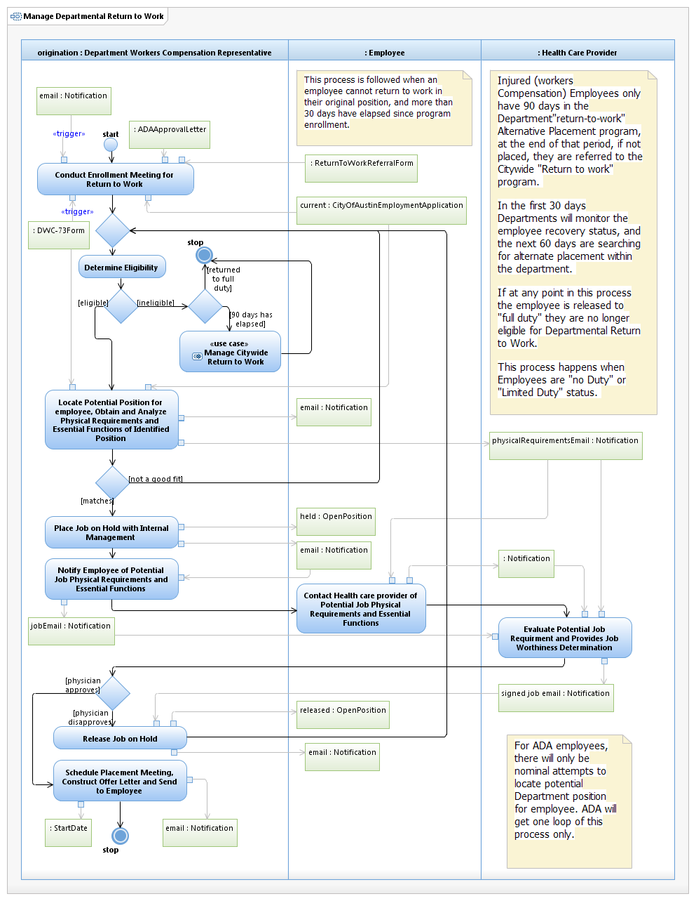

Use Case Model: Manage Departmental Return to Work

Use Case Model: Manage Departmental Return to Work
Architect: Aaron Brown, IT Enterprise Architect Senior
Date Last Modified: 4/5/2013
User Review: Rick Thomas, Shelly Sheppard, Sharon Huckabee, Leslie Milvo, Dianna Robles
Date: 4/5/2013
When an employee has been injured on the job or Americans with Disabilities Act (ADA) approved, the City offers the benefit of the Return to Work program. This program is designed to afford the employee time to recover from their injury and possibly place them in an alternate position.
Follow link to Role Definitions
Use Case Model: Manage Departmental Return to Work

Activity Model: Manage Departmental Return to Work
Activity Documentation
| Activity | Documentation |
|---|---|
| Determine Eligibility | The employee sustained a compensible injury at work, and is on "limited duty" or "No duty" return to work status. |
| Locate Potential Position for employee, Obtain and Analyze Physical Requirements and Essential Functions of Identified Position | Not only does the employee have to meet minimum qualifications for the position, the position must be at an equal or lesser pay grade. The employee can also specify on the Enrollment form that they will not accept a lower grade or lower salary. |